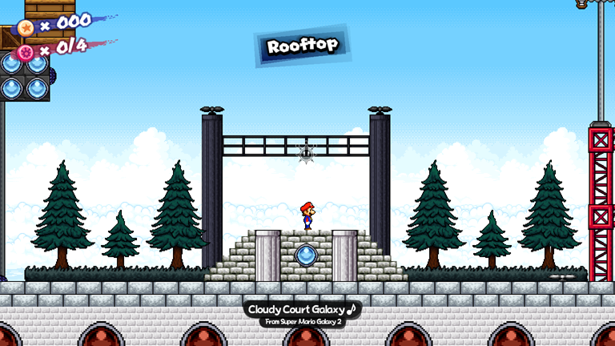
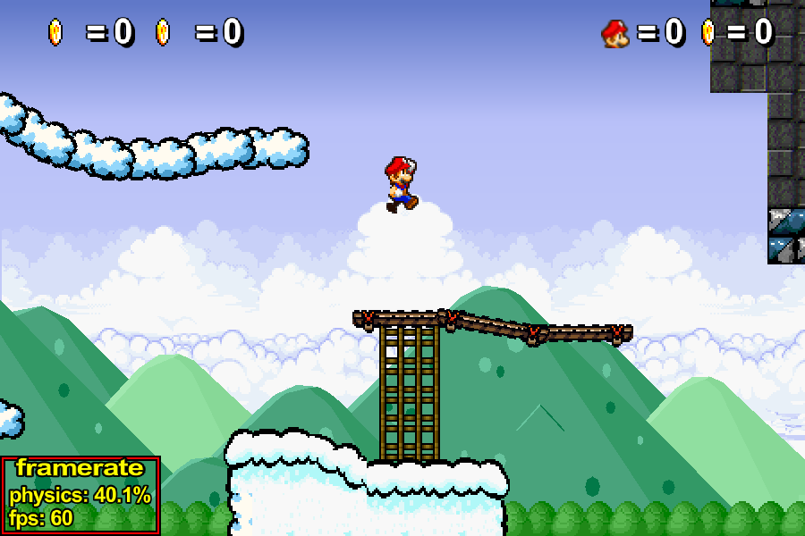
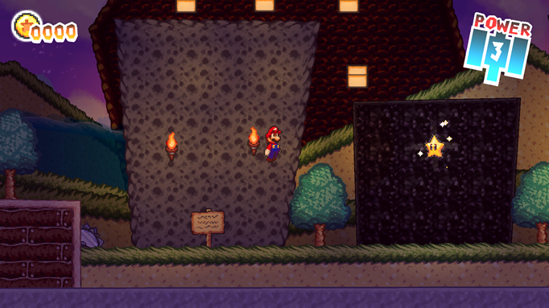
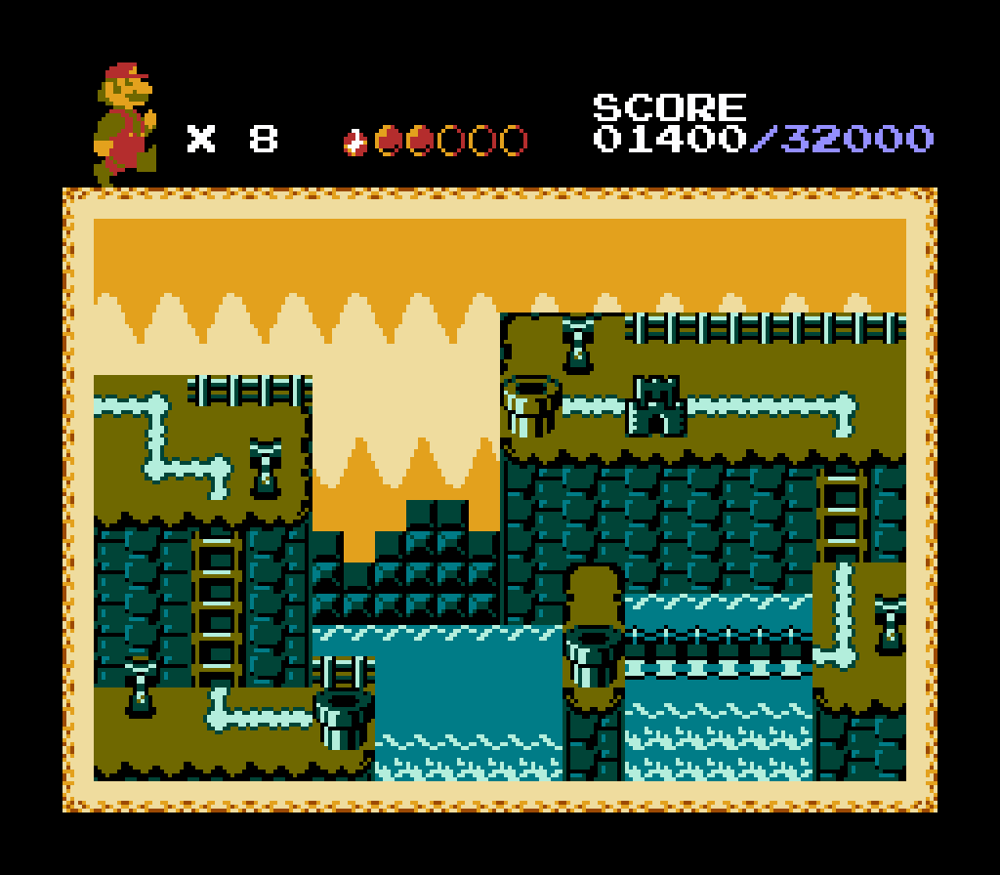

fan games
as a major fan of the Super Mario series, i've worked on countless fanmade games relating to the series.
most of these are derivative of the cult classic flash game, Super Mario 63.
here's a list of every fangame i've developed!
Super Mario 127

created by Solarshine Studios, Super Mario 127 is the official sequel to Runouw's Super Mario 63!
if you're curious about it, i recommend checking out the game page for more details :)
as of November 2026, this is my main project. i'm currently working on programming, UI, sprites, and music.
i've been working hard along with the rest of the team to try and bring it to a full release!
i've worked on this game since 2024, in which i helped release the 0.9 update.
as a refresher, 0.9 brought a full dialogue system, as well as a completely redone user interface ^^
i deeply appreciate the help i've received from this game's community...
it's very rewarding to work on a game with such a dedicated fanbase; the reception to each demo is a very big motivator for my continued work on this :3
Super Mario 63 Ultimate

ever since my childhood, Super Mario 63 has been a major influence for me as well as the big catalyst that really got me into game development as a hobby.
unfortunately, time has not been kind to it and i fear that memory of the original game could eventually fade with time...
therefore, i decided to start this project! now, unlike the widely known Super Mario 63 Redux (a project i greatly respect)...
this is a faithful port of the original game logic and assets in the Godot 4 game engine, aiming to preserve the original experience.
the main goal of Super Mario 63 Ultimate is preservation, yes, but also to provide countless optional enhancements.
backported QoL for modern players, greatly expanded modding support, uncapped framerate, any aspect ratio, the works :)
i haven't been able to put much time into this due to my current focus on Super Mario 127. once 127 is done, i plan to work on this game next!
luckily, a lot of code can be reused between the two projects, so it shouldn't be too much of a wait ^^
show more...
Super Mario Shockwave

my first attempt at a Super Mario 63 esque fangame! this was more of an experimentation ground for me :P
its vision was somewhat fragmented, lacking cohesion, though i remain proud of it.
the pitch for this game is essentially Super Mario 63 meets Super Mario Bros. Z.
the combat mechanics progressively gained more importance during planning, however prototypes with said mechanics never came into fruition.
unlike similar projects, it had a strong focus on newgrounds aesthetics and music!
it used almost entirely NG audio portal music, and had an art style with a prominent vector/pixel mix.
this project is currently scrapped, as i personally don't feel a strong desire to work on it.
this is mainly because i feel the void is filled by games such as Super Mario 127 and Super Mario Reflexion.
furthermore, a lot of the unique aspects i wanted to explore with this game are aspects i feel i can explore better in KinetiBall.
still, thank you all so much for the support!
Super Mario Bros. Ultra Deluxe

as of November 2026, this is the most popular project i've made.
it's a faithful Godot 4 remake of Super Mario Bros. but with elements from Super Mario Bros. Deluxe! ^^
it was also to contain extra world themes, such as those shown in Super Mario Maker 2, as well as a full level editor and modding support.
most notably, it has custom pixel art and music due to concerns i had at the time with including Nintendo assets in game remakes...
the project was discontinued with the reveal of Super Mario Bros. Remastered, a very impressive project that managed to achieve essentially everything i set out to do!
i ended up joining its team to help out with the development of said remake. most notably, i contributed the ROM asset extractor seen in the final game :3
i've received a few requests to release some sort of public demo of this project.
embarrassingly, i do have to admit that what was shown in the trailer is essentially all there was...
i quite underestimated just how complex the original game's source code would be :P
i'm still proud of what i made for this project, but personally i couldn't be more impressed with the Super Mario Bros. Remastered team.
it's no small feat to be maintaining a remake as big as that for so long, and it's a very well made remake that only gets better over time.
long story short, if you liked this project, i'd recommend checking out Super Mario Bros. Remastered!